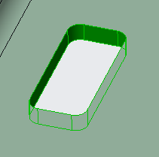
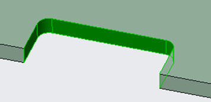
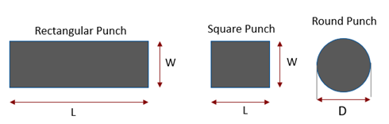
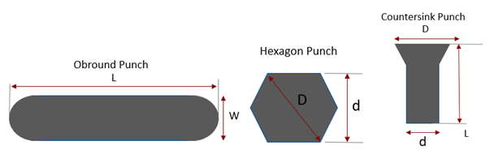
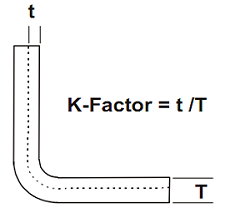
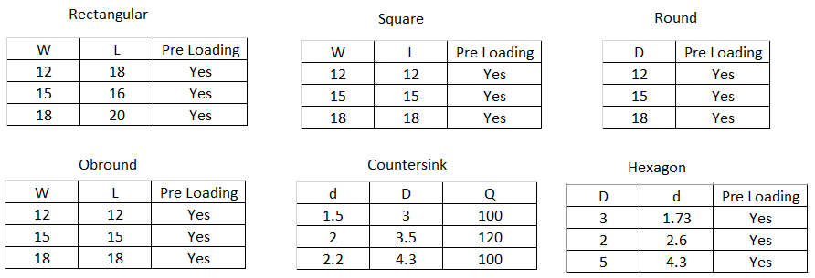

追加の工具費および在庫コストを回避するために、パンチ工具の形状およびサイズは標準に従う必要があります。
各組織には、標準のパンチ／ダイ形状およびサイズの独自のセットがあります。任意のコンポーネントを設計する際、設計者が在庫にあるパンチ形状およびサイズの情報を把握していれば、フィーチャ設計に対応する最も近い標準工具を特定するのに役立ちます。
フィーチャ設計に何らかのばらつきがある場合、設計者は非標準のパンチ形状／サイズで進めるか、工具費および在庫コストを削減するために利用可能な標準サイズに合わせて設計を修正するかを判断できます。
このルールは、正方形、丸形、オブロング、六角形、皿穴など、さまざまな形状タイプに対して、許容される標準パンチパラメータを絶対値として指定できるように構成できます。
注:
ルール構成ダイアログボックスで長方形パンチが構成されていない場合（正方形パンチのみが構成されている場合）、長方形の切り欠きはニブリング加工で製造できます。長方形の切り欠きに対して、このルールは長方形の最小幅を用いて正方形パンチを推奨します。長方形切り欠きの幅が正方形パンチと一致する場合、長方形切り欠きが正方形パンチを用いたニブリング加工で製造されるものとして、このルールは合格になります。
ルール構成ダイアログボックスで長方形パンチが構成されている場合、長方形切り欠きの幅または長さのいずれかが標準の長方形パンチと一致することを前提に、長方形の切り欠きはニブリング加工で製造できます。
ルール構成ダイアログボックスで正方形パンチと長方形パンチの両方が構成されている場合、このルールは個別に検証されます。
角R付きの長方形切り欠きでは、非標準の丸パンチに対してこのルールは不合格を示します。角R付きの長方形切り欠きは、正方形または長方形パンチによるニブリング加工で製造できますが、角部の非標準Rは達成できないため、このような場合は不合格になります。


穴径がデータベース内の最大丸パンチ径より大きい場合、このルールはニブリング加工で穴を製造するために最大パンチ径を考慮します。
オブロング形状および六角形状については、ルール構成ダイアログボックスに移動して標準パンチ値を参照してください。
Pre Loading: ルール構成ダイアログボックスで、すでにロード済みのパンチに対する YES／NO の状態をユーザーが構成できます。
次の標準切り欠きがサポートされています:

ここでは、
W = 幅
L = 長さ
D = 穴径（丸パンチ）

ここでは、
L = 長さ（オブロングパンチ）
W = 幅（オブロングパンチ）
D = 対角点間距離（六角パンチ）
d = 平行辺間距離（六角パンチ）
D = 皿穴径（皿穴パンチ）
d = 穴径（皿穴パンチ）
注:
DFMPro では、K 係数のデフォルト値は 0.5 です。

ユーザーは、Import ボタンを使用して、Excel シートテンプレートに存在する一括データをインポートできます。
標準テンプレート形式:
